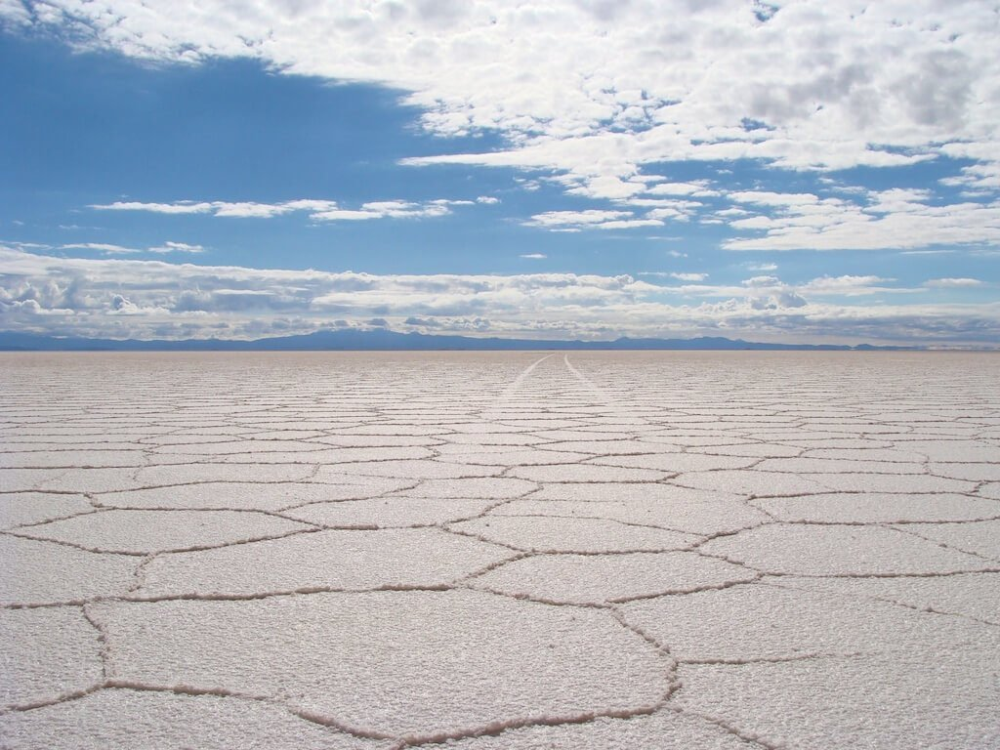

NOTRE EQUIPE
Voici voilà les fameux analystes de controverse!
Inel Ghazli
Resp. Livret
Michael Lebon
Resp. Cartographie
Romain Dreuilhet
Resp. Affiche
Avesta Molaei
Resp. Site Web (coucou)
Réalisé dans le cadre des cours d'analyse de controverses
ESIEE Paris, l'école de l'innovation technologique... Et des controverses!
Première année du premier cycle - Groupe c8 - Classe 12c